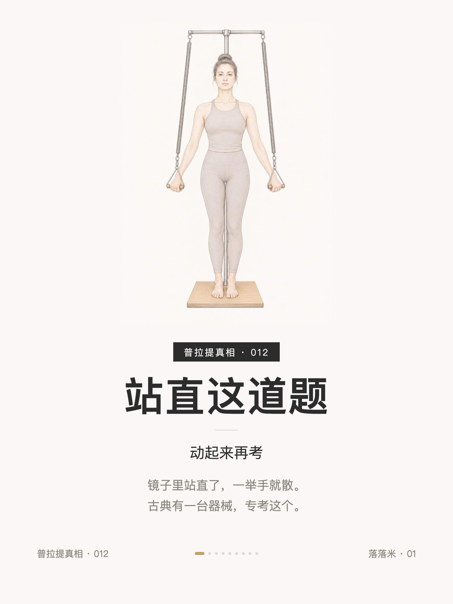
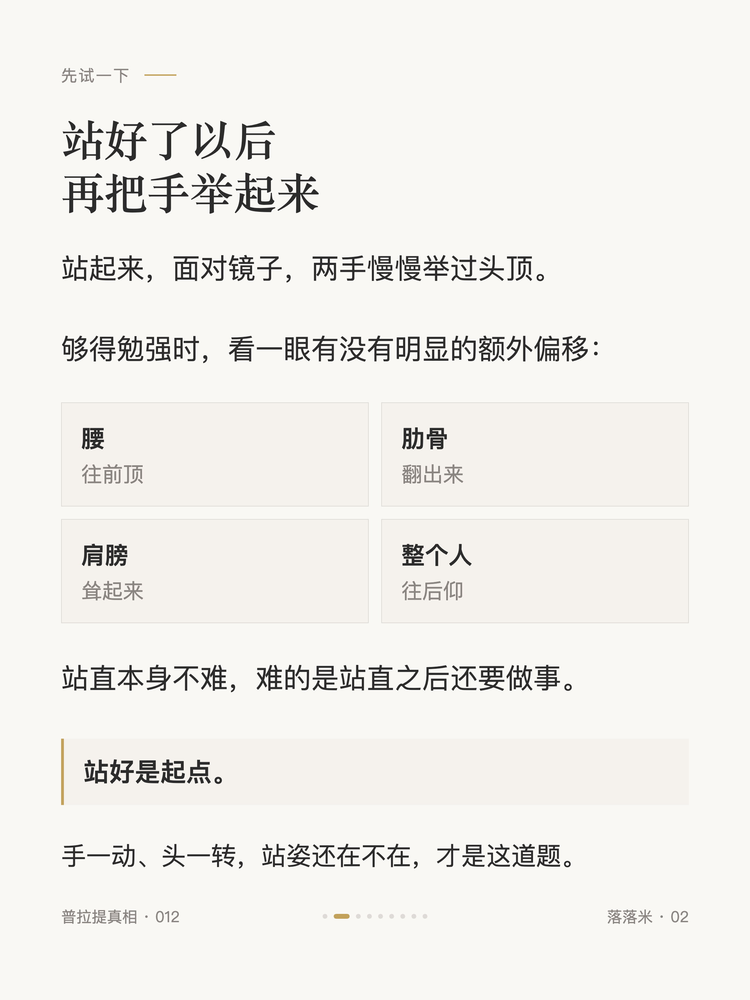
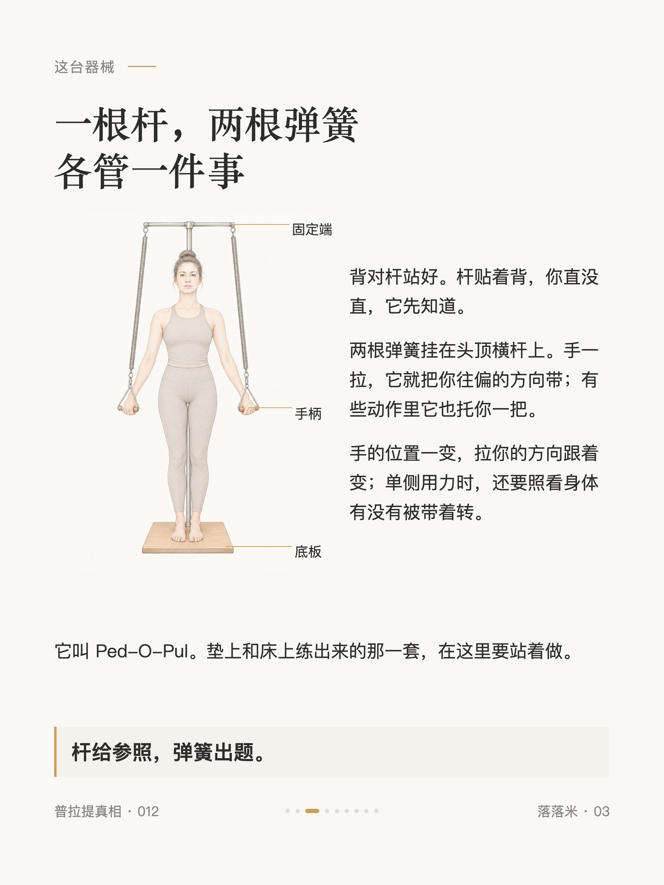
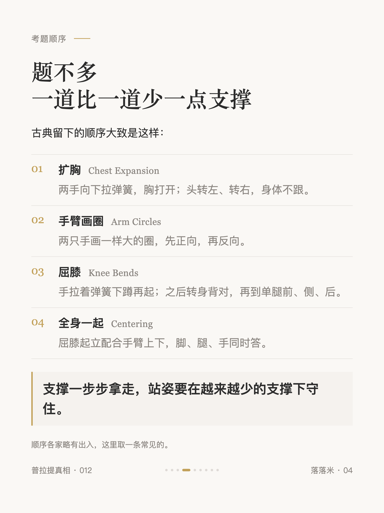
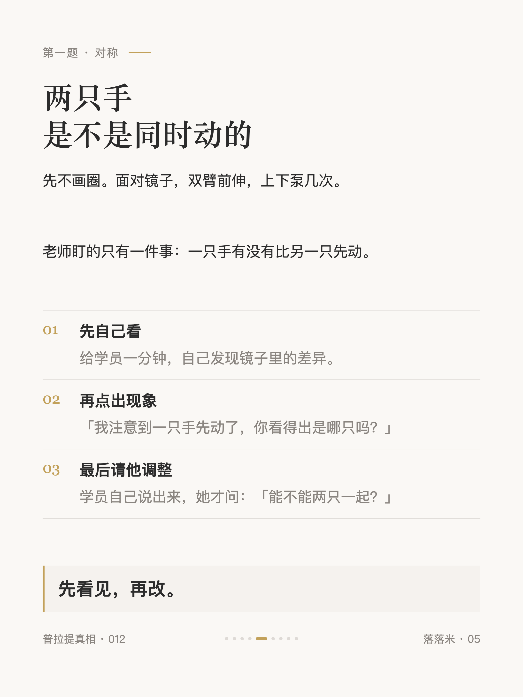
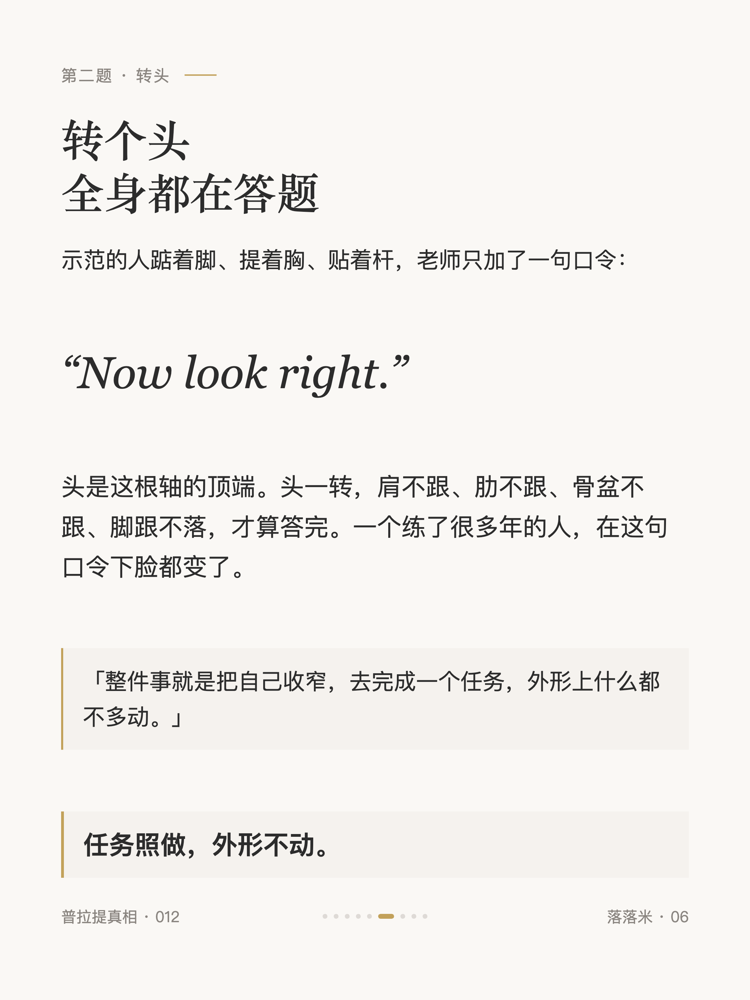
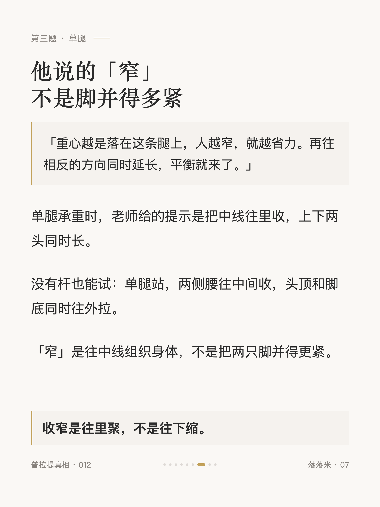
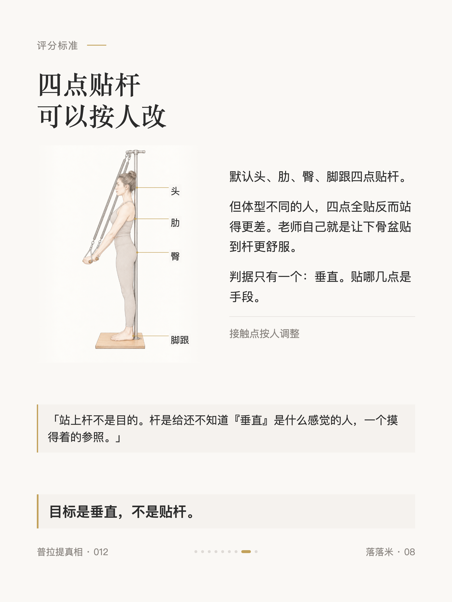
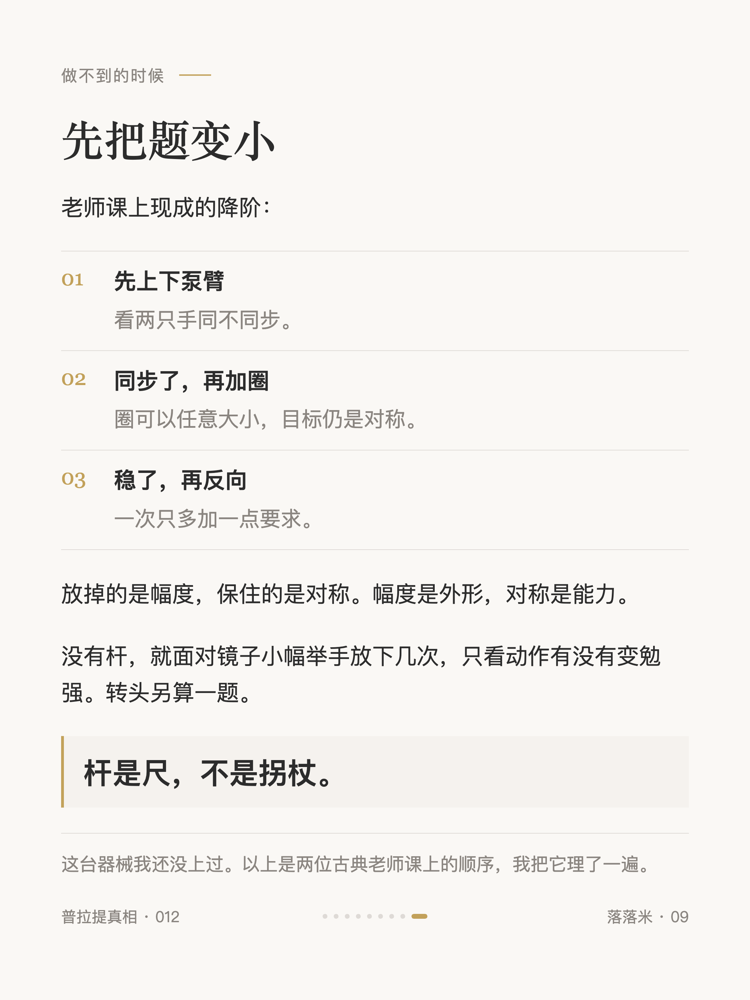

普拉提真相 #012
普拉提站直这道题，动起来再考

1 / 9

2 / 9

3 / 9

4 / 9

5 / 9

6 / 9

7 / 9

8 / 9

9 / 9
← 左右滑动浏览全部卡片 →
镜子里站直了，一举手就散。
站直本身不难，难的是站直之后还要做事。手一动、头一转，站姿还在不在，才是这道题。
古典有一台器械专考这个：一根杆给参照，两根弹簧出题。考题按「拿走支撑」的顺序变难——扩胸、画圈、屈膝单腿、全身一起，支撑一步步拿走。
判据只有一个：垂直。贴哪几点是手段。杆是尺，不是拐杖。
这台器械我还没上过。以上是两位古典老师课上的顺序，我把它理了一遍。